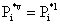
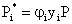
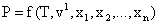
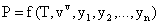

Il calcolo degli equilibri liquido-vapore consiste nel determinare la composizione delle fasi liquida e vapore e una variabile di stato incognita, nota la composizione della miscela ed una o più variabili di stato note. Sia n il numero di componenti della miscela.
Per la risoluzione del problema è quindi necessario impostare:
·
n equazioni di equilibrio della forma  
·
una equazione di stato, applicabile sia alla fase
liquida che alla fase vapore, della forma  
· n equazioni esprimenti i bilanci di massa
Wald prevede due possibili scelte per le equazioni di stato e di equilibrio:
1. equazioni di Redlich-Kwong, modificate da Soave [1]
2. equazioni di Peng-Robinson [2]
Può accadere che l’equilibrio liquido-vapore non esista perché:
· il fluido è surriscaldato o sottoraffreddato
· il fluido è in condizioni supercritiche
Anche in questi casi il programma deve fornire risposte, in particolare circa le curve di raffreddamento e di condensazione. Specificatamente le routines EVAPOR e CONDEN sono state modificate rispetto alla loro versione originale, in modo da fornire risposta anche nel caso di fluidi supercritici. In tal caso è stata scelta una regola convenzionale per qualificare il fluido di natura gassosa o di natura liquida, in modo in particolare da applicare le procedure più appropriate per il calcolo delle proprietà termodinamiche del fluido. Tale regola, basata sul confronto tra la temperatura attuale e la temperatura pseudocritica è programmata nella subroutine PROC2.